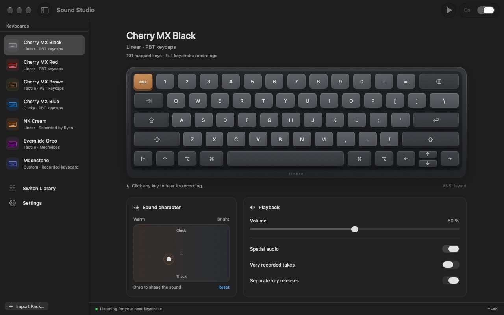

Make it your sound.
Warmer or brighter. More thock or more clack. Shape your recordings with a simple, two-dimensional sound pad.
✳ A little joy, every keystroke
Turn everyday typing into something you look forward to. Real mechanical keyboard sounds, right on your Mac.
macOS 14+ · Apple silicon & Intel
Soft and mellow. Crisp and clicky.
Try a few. See what feels right.
A small taste of Timbre. The Mac app brings these sounds to all your apps.
Made to feel at home
Lives quietly in your menu bar.
Ready when inspiration strikes.
Out of the way when it doesn’t.

Warmer or brighter. More thock or more clack. Shape your recordings with a simple, two-dimensional sound pad.
Seven keyboards to start with. Download more from the library, or bring along your favorite Mechvibes sound packs.
Preview switches, adjust the volume, or take a quiet moment. All from the menu bar, with shortcuts you can make your own.
Real mechanical switches. Distinct recordings for keys like Space and Return, with every pack’s original character.
Built natively in Swift. A familiar home in your menu bar, with light and dark appearances that belong on your Mac.
Switch Timbre off and keyboard monitoring and the audio engine stop. Your typing stays on your Mac.
A few good questions
Timbre runs on macOS 14 Sonoma or later, on both Apple silicon and Intel Macs. Enable Input Monitoring when prompted so it can play sounds while you type in other apps.
The current version is available from our private GitHub repository. You’ll need a GitHub account with access. Download the Mac ZIP, unzip it, and move Timbre to Applications.
Yes. Import Mechvibes sound packs, or browse the Switch Library inside Timbre and download only the keyboards you want. Seven profiles are already included.
No. Timbre uses key events to play matching sounds locally. It doesn’t store or send your typed text. Network access is used when you choose to download a sound pack.
Yes. This demo uses real NK Cream, Cherry MX Brown, and Cherry MX Blue recordings from the same Mechvibes packs included in Timbre. The app adds sound shaping, optional spatial audio, and more profiles. Recording credits ↗
Make the everyday a little better
A little companion for your Mac.